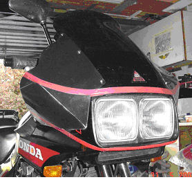
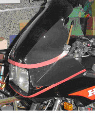
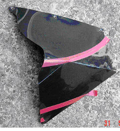
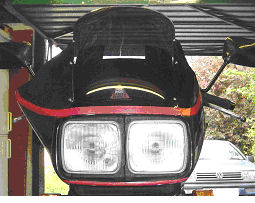

The narrow fairing of the RC17 means that a strong blast of air gets to the hands and chills them in winter. Heated grips help to some extent along with heavy gloves, but I have made add-on extensions to the fairing designed to increase its width and the protection it affords the hands.

Picture 1 shows the extended fairing from the front right quarter. I have added red tape to attempt to disguise the creases in the extensions, and to tie them visually to the original.Picture 2 shows the left side, and the photo has been brightness-adjusted to distinguish the addition from the original by emphasising the very slight difference

in colour. In the original the join is barely noticeable since the plastic sheet used is solid black with a very high polish. I bought it from a commercial plastics supplier after explaining what I wanted it to do. The material is about 1.2 mm thick, flexible and finished on one side to a very high gloss and covered with a peelable clear coating to protect it. I realise this works well on black bikes, and colour matching might be difficult on other colours, but I saw a range of sheet colours in stock.Each side is made of a single piece, scored radially from a point in front of the hand position, but cut through along one of these lines. A hole is drilled into the end of the cut to stress-relieve it. The sectors either side of the cut are made equal to overlap (much like making a shallow cone from a flat disc) and are glued using liquid plastic weld (acetone?) sold in model shops for plastic kit builders.

Picture 3 shows the right side piece, and the double section is below the upper red tape, down to the crease line. A Stanley knife and special blade (#5194 – the one that hooks backwards, and is drawn backwards to make the score) is used to score the creases, lightly, and after practice or it will crack right through. I scored on the inside but this gives slight whitening along the crease as the material stretches, so it may look better if the score is outside, but care would be needed not to damage the finish since the protective cover layer may have to be removed first. Don’t score the creases all the way to the “apex” – leave it to form a rounded effect. If any crease appears to be failing it is possible to add a narrow strip of plastic bridging it inside and stuck on with the liquid weld. This stuff is magic since capillary action spreads it around, and it evaporates rapidly. I find it useful around the house for all sorts of repairs, plus fixing stuff on the bike too. (e.g. a cracked fascia corner resulting from cack-handed fairing removal)
Picture 4 shows the coverage / protection provided in comparison with standard. This shot is taken from dead ahead and level with the handlebars, which are straight ahead. The right handgrip is completely hidden; only the end of the brake lever is out in the airflow.A second look at picture 2 shows that the extension is secured to the fairing by four screws each side, and these are existing screws so no new holes are needed. The top three screen screws are used but these need to be changed from the standard countersunk items. I already had stainless Allen-headed screws in there for cosmetic reasons and these work fine, but best would be the large-head button Allen screws so the extension is trapped under a large area and the load is spread. The upper two each side are easily removed, but the third down has its nut behind the fascia. I found that I could loosen and retighten the screw without having to access the nut, and with a slot cut from the edge into the mounting hole I could slide the extension on. A slit washer made from an offcut of the plastic was added below the screw head to spread the load. The final screw at the lower rear corner of the extension is on the fairing side holding the deflector strip onto the upper edge below the handlebar – the nut inside can be reached with the fingertips. A thick nylon washer is put between the extension and the deflector to fill the recess the screw normally sits in, otherwise the screw tries to pull through the new plastic. This screw already has a washer under it to go outside the new part, and is long enough to take the additional washer.
No further securing is needed, the front end sitting tight to the side of the nose. This could be due to careful pattern making, since the prototype was made of corrugated cardboard, taped on with gaffa tape for security and then all over for waterproofing. That survived a full winter. The four screws provide a firm mounting, the red electrician’s tape may help secure it a bit, but its use was originally to disguise the creases and soften the shape visually. The shape of the open rear section immediately in front of the hands may need to be trimmed depending on how it turns out – my two sides lie slightly differently here and had to be trimmed in situ. Picture 1 shows how the brake lever clears the upper edge on full lock.
The result is rigid, seems to do the job to some extent and (to my eyes anyway) doesn’t make the bike look too much of a lash-up. It has had no apparent effect on high-speed handling – up to 110 mph anyway! Over the last winter none of my mates in the bike club even noticed the addition, let alone commented on it, and they don’t normally miss an opportunity. The only effect I noticed after taking it off in May was a slight matting of the paint between the upper two screws. The plastic seems to have vibrated on some trapped dirt. It mostly went with some T-cut, and this year I have put in there some sticky-backed foam draughtproofing strip to keep the bits apart.
The other non-standard part visible in the pix is the M&P (UK mailorder house) flip screen. This has had about 3 cm. trimmed off the top edge to improve appearance, but still give more protection than standard to my skinny six feet height.